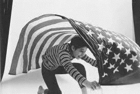

| B06XS8V44N EBOK | |
| Unknown | |

ShINC.
MAGAZINE-D/01
Copyrights All Reserved 2017 by ShINC.PUBLISHING

Return To
" Subjective Photography "
ShINC.
MAGAZINE-D/01
INDEX ShINC.MAGAZINE-D/01
Return To " Subjective Photography "
ShINC.Archives/
Talking About

Return To
" Subjective Photography "
1951年年、ザールブリュッケン国⽴立立美術学校で開催された写真展
『Subjective Photography』(主観主義写真）、同名の写真集を企画
し「主観的造形写真」を提唱したオットー・シュタイナートは1954年年
『Subjective Photography 2』を編集するにあたって次のように述べ
ている。「物理理⼯工学の⼯工業的な発達にともなって写真はわずかな技術的
助けを借りれば、誰にでもできるようになっている。これに関する技術
や科学的重要性は、誰も今⽇日否定しえないものであるが⼀一⾯面、写真にお
ける創造性という⾯面からは質的な低下を⽰示してきており、同時にこれは
写真の「創造」という⽅方向に対する可能性並びに理理論論上にも悪い影響を
もたらしている」。
オットー・シュタイナート (Otto Steinert 1915-‐-‒1978 ドイツ出⾝身）
" Objet "
2001年年3⽉月 東京⼯工芸⼤大学芸術学部映像学科卒業
2013年年8⽉月 「shadowtimes vol.38 shadowrecommends」に選出、掲載
2015年年10⽉月 「HUNGRY ISSUE.5 LIMITED EDITION」に選出、展⽰示（渋⾕谷、京都、札幌）
2016年年1⽉月 TAP Galleryに所属
2016年年2⽉月 個展「Objet : daylight」（TAP Gallery）
2016年年5⽉月 個展「Objet : sunset」（TAP Gallery）
2016年年8⽉月 個展「Objet : horizon」（TAP Gallery）
2016年年10⽉月 「VOICE showcase」に選出、掲載
2017年年1⽉月 個展「Surface」（TAP Gallery）
Hard Wear /
Panasonic LUMIX DMC-‐-‒GH2
OLYMPUS M.ZUIKO DIGITAL ED 9-‐-‒18mm F4.0-‐-‒5.6
Panasonic DMW-‐-‒FL360L
" Hairpiece "

" Hairpiece "
昨年年、中⽬目⿊黒駅近くの『中⽬目⿊黒銀座』に引越しをした。と⾔言っても住所的
には上⽬目⿊黒5丁⽬目から2丁⽬目、直線距離離にして800mほどの引越しだ。この通
りには郵便便局や区役所があるので良良く通っていたがこの『EbisuYa』と⾔言う
店は化粧品店という事もあって気にしていなかった。地元の写真など頼まれ
ないと撮る事がないが、なぜかこの店先に出ている『ヘアーピース』が気に
なり数枚撮った。帰ってその写真を⾒見見てみると商品の袋に空や近くのビルが
映り込んだ写真があった。「これは綺麗麗だ、もっとアップで撮ってみよう」
と思い、翌⽇日⾏行行って⾒見見たがあいにくの曇り。この店は東向きで周りには同じ
位の⾼高さのビルがあり午前中でないと綺麗麗な写り込みが⼊入らない。
晴れの⽇日に何回か撮影した。最初はちょっと気なるモノを⾒見見つけて撮る。
そこに、もっと気になるモノを⾒見見つけてまた撮る。もっと綺麗麗に撮ろうと
思って撮る。僕の写真はいつもその繰り返しだ。
EbisuYa

ShINC.Archives/
" Untitled "
Photographed Yokohama City Ca, 1960
1911年年 愛媛県に⽣生まれ。
1935年年 東京電気専⾨門学校卒業、理理化学研究所に⼊入社。
1936年年にパーレット6.3付きで写真を始める。パーレット同⼈人会に⼊入会。
⼤大⽇日本サロン、アシヤサロン、国画展、国際写真サロン、パーレット同⼈人会、
研展（東京写真研究会主催）、東京美術協会展、全関⻄西サロン、
アメリカ・ポピュラーフォトコンテスト、ロンドンおよびパリサロン、
⼆二科展などに⼊入選。全⽇日本写真連盟役員。
東京写真研究会審査委員として全国アマチュアカメラマンの指導にあたる。
1958年年 旭光学に⼊入社。
東京サービスセンター所⻑⾧長、宣伝部⻑⾧長、ワールドコンテスト事務局⻑⾧長を歴任。
全⽇日本写真連盟役員。
1969年年 東京で精神異異常者の兇刃に倒れ急逝する。
写真展（抜粋）
1964年年 『変貌』 ⽉月光ギャラリー
1969年年 『⽊木⽯石の詩』 ペンタックスギャラリー
2006年年 『変貌』 Monochrome Gallery (ベルリン)2008年年 『Otto Steinert & Kiyoshi Niiyama』
Kichken Gallery (ベルリン)2008年年 『新⼭山清の世界』 横浜⾚赤レンガ倉庫
2009年年 『The Pearelette Age』
Gallery Cantelmo (ニューヨーク)2009年年 『パーレット時代』 横浜みなと町ギャラリー
2010年年 『ソルントン時代1』 横浜みなと町ギャラリー
2011年年 『新⼭山清⽣生誕100年年記念念』 東⼭山町⽂文化ギャラリー
2016年年 『新⼭山清サブジェクティブフォトグラフィービジュアル世界の冒険』
ブリッツギャラリー
写真集
『新⼭山清の世界パーレット時代 1937~∼1952』 ⽇日本カメラ刊
『新⼭山清の世界 ソルントン時代 1947~∼1969』 ⽇日本カメラ刊
『朝顔』Kichken Gallery刊

is Talking About
50年年代から60年年代にかけて⽊木村伊兵衛、⼟土⾨門拳が象徴する報道写真
から60年年代になり個⼈人の表現に移⾏行行する時代70年年末までは広い意味で
のコマーシャル系の写真家のパワフルな時代だった。
ファッション関係に特化した広告デザイン会社アドセンターを設⽴立立し
ビジュアルファッション誌『アン・アン』の初代アート・ディレクター
堀内誠⼀一⽒氏とカメラ毎⽇日編集者として⽴立立⽊木義浩、横須賀典明、篠⼭山紀信
など、多くの広告、ファッションカメラマンを起⽤用した『カメラ毎⽇日』
編集⻑⾧長、⼭山岸章⼆二⽒氏と多くの仕事をした、⽴立立⽊木義浩⽒氏に両⽒氏について
語ってもらった。


01
02
ShINC : 堀内さんついて聞かせてください。
⾜足開いて⼿手を腰にやるポーズを真似て撮ったのが最初の撮影
だったね。堀内さん⾃自⾝身も14歳で伊勢丹丹の宣伝部に⼊入って仕
⽴立立⽊木： 学⽣生の時、銀座の富⼠士フォトサロンが出来て2回⽬目
事を始めたという事もあるけど学校出たての俺みたいなガキ
に⽴立立⽊木家の写真展をやる事になってその展⽰示について兄の
に「仕事だよ」って撮らせてしまうのには驚いたね。静かに
同級⽣生だった細江さんに相談したら「堀内さんに相談して
動き始めた『その時代の凄さ』と⾔言うのを堀内さんには感じ
みたら？」と⾔言う事になって堀内さんが来て展⽰示をして下
たね。
さったんだよ。
⼊入社して2年年位した頃にアドセンターが『週刊平凡』の仕
卒業間際に就職の事で堀内さんに「どこか就職⼝口ないで
事を受けて『ウィークリーファッション』と⾔言うページを担
すかね？」って電話したら「報道なの？婦⼈人科なの？」っ
当する事になったんだよ。最初の撮影は東京駅でそれも許可
て聞かれて『婦⼈人科』の意味が分からなくて返事に困って
なしでね。モデルは売れっ⼦子だった芳村真理理さんと⼥女女⼦子社員
いると「とりあえず来れば」って事で会いに⾏行行ったんだよ。
で乗客が降降りてくるとスタッフが「⽌止まらないで下さ〜～い！
アドセンターもまだ設⽴立立したばかりで6〜～7⼈人位しかいない
通り過ぎて下さ〜～い！」って⾔言うんだよ。すると芳村真理理さ
時代で新宿の三友ビルに⼆二部屋借りていてその上の階に中
『堀内誠⼀一 旅と絵本とデザインと』平凡社刊
んが会社の⼥女女の⼦子に「スローシャッターだから、動いちゃダ
村正也さんの事務所兼スタジオがあった。
メ！、動いちゃダメ！」って⾔言うんだよね。通勤客にしたら
堀内誠⼀一（1932年年-‐-‒1987年年）
⾯面接に⾏行行ったら堀内さんが殻付のピーナッツ⾷食べながら
何⾔言っているんだか分らないよね。
アートディレクター・絵本作家
「ウチ来る？」って聞かれたので「はい」って⾔言ったら側
1947年年 14歳で伊勢丹丹宣伝部に⼊入社。
当時は印刷所がカラーは4X5でコダックのフィルムでない
1955年年 千代⽥田光学（現コニカミノルタ）
にいた⿃鳥居さんに「社⻑⾧長、来週からこの⼦子来るよ」って事
と受け付けてくれなかったんだよ。おかげでシートホルダー
PR誌『ロッコール』のデザイン
でアドセンターに⼊入る事になったんだ。
の出し⼊入れは早くなったよ。毎週６ページ位やるって契約
1956年年 伊勢丹丹退社。
だったけど『テニスコートの恋』なんて皇室のニュースが⼊入
1957年年 ⿃鳥居達也とアドセンター設⽴立立。
ShINC : 最初の仕事はどんな仕事でしたか？
1957年年 平凡社（現マガジンハウス）『週刊平凡』
ると俺達のページはパッーって⾶飛んじゃうんだよね。
『ウィークリーファッション』AD を担当。
随分後で亡くなったデザイナーの⽯石岡瑛⼦子さんに「あれは
1969年年 アドセンターを⽌止めフリーとなる。
⽴立立⽊木： ⼊入社前にチラシの撮影があると⾔言うので⾏行行ったら
切切り抜いて取っておいたのよ」って⾔言われたよ。あの時代に
1970年年 an anのADに就任。ロゴデザイン。
モデルは当時⼀一世⾵風靡していた芳村真理理でこっちはスタジ
週刊誌にファッションを⼊入れ込んだのが斬新だったね。
1974年年 フランスに移住。
オライティングなんてよく知らないので500Wを2~∼3発当
1980年年 『BRUTUS』創刊準備のため帰国。
ロゴデザイン を担当
てて当時のアメリカの『SEVENTEEN』って雑誌がよくやる
ShINC : 堀内さんは撮影に関して指⽰示を出す⽅方でしたか？


03
04
⽴立立⽊木： 「どこどこが⾯面⽩白いよ」とは⾔言っていたけど「ああ
ShINC： その時代に影響を受けた写真家はいますか？
撮れ、こう撮れ」とは⾔言わなかったね。当時、ライトパブリ
シティーにいた村越襄さんは完璧なコンテ描くことで有名
⽴立立⽊木： 堀内さんの影響だと思うけど⽯石元さんかな？
だったけど堀内さんはニュアンスを伝えるコンテ描くんだ
ある時⽯石元さんが会社にいらして打ち合わせの後に「散歩
よ。俺が「このコンテ分良良くわからない」って⾔言うと「バ
しながら新宿で写真撮って帰る」と⾔言うのでついて⾏行行ったん
カッ」って⾔言ってどこか⾏行行っちゃう事もある。
だよ。道端のゴミ箱を置く様な所に⼦子供がいてそれを撮ろう
ananで⾦金金⼦子功さんの奥さんのユリさんと⼭山⼝口県の萩に
としているのだけれどもピントが合わないのか待っているの
⾏行行った時も3〜～4点着物持って⾏行行って⾊色々撮って帰ってレイア
か中々シャッター押さないんだよ。下⼿手くそな俺が⾔言うのも
ウトみたら普通なら服⼀一点で1ページなのにすごいページ数
なんだけど「今だ！」って時に押さないんだよ。凄いのは⼦子
週刊平凡創刊号 1959年年
になっている。その頃から堀内さんの場合は堀内流流で勝⼿手に
供が⽯石元さんが撮っているのに気付かないというか、『意に
モデル：団令令⼦子・⾼高橋圭三
やるのだから⾯面⽩白いと思ったら⾒見見開きにしたりする。カメラ
返さない』んだよね。後⽇日ある対談で「撮る者は気配を消さ
表紙撮影：⽔水野功
マンにしてみれば⼤大きくしてもらえるのは嬉しいよね。
なければならない」って⾔言っていて「あの時教えてください
⼊入社してすぐ、ファッション誌の⼀一つから仕事頼まれて、
よ」って思ったよね。（笑）
堀内さんに「こんな仕事きちゃったんだけどどうしましょ
⽯石元さんは散歩する時に柔らかい⿊黒⽪皮の鞄にリンフォフテ
『ウィークリーファッション』撮影：⽴立立⽊木義浩
う？」って聞いたら「やればいいじゃない、その代わり名前
ヒニカと数枚のホルダー、ローライトとライカの3台持って
のところに（アドセンター）って⼊入れてもらいなさい」って
三脚を肩にかけていてこれは4x5だと思ったらリンフォフ出
⾔言われて、翌⽉月も仕事⼊入って堀内さんに「また来ちゃいまし
して35だと思うとライカを出すんだよ。「それって変じゃな
た」って⾔言ったら「もういいから早く有名になってよって」
いですか？」って聞いたら、「⽴立立⽊木さん、撮る物によってカ
って⾔言われたんだよ。
メラは決まるでしょ」って⾔言うんだよ。堀内さんがロッコー
「それってどう⾔言う意味？」って思ったけど、そんなに⼤大
ル誌で『ロバート・フランクに注⽬目』と⾔言う特集をやったの
きな会社じゃないからものすごく忙しいと⾔言う訳じゃない
を⾒見見て彼にも影響されたよね。俺の若若い時に出会った先輩た
し、堀内さんもなんとなくアルバイトで忙しい⼈人だったし
ちはみんなおかしくて個性的だったね。
ね。ミノルタのロッコール誌の仕事やっていたけどそれは会
細江さんは俺が学校に⼊入ってすぐに兄貴から挨拶に⾏行行きな
アドセンター：1957年年に⿃鳥居達也と堀内誠⼀一によって設⽴立立
社の仕事じゃないし、そこが⾃自由というか気ままというか、
さいって⾔言われて銀座三越の向かいに⼩小⻄西六六写真のギャラ
されたファッションに特化したデザイン広告会社。
アドセンターってそんな会社だったね。
リーがあってその近くの喫茶茶店で会ったんだよ。

05
06
そしたらいきなり英語で「ハーイ」って⼊入って来て別れるま
なって蕎⻨麦屋⾏行行ったらそこで突然堀内さんが、「僕、癌な
でずっと英語なんだよ。周りに⼈人がいて英語で話す⽇日本⼈人っ
の」って告⽩白するんだよ。それも軽く⾔言うから、その時は本
て嫌なやつじゃない。⽥田舎者はひるむね、それを眼の前で繰
当に驚いたよ。結婚も突然で驚かされたから常習犯だよ。結
り広げているんだから参ったよ。細江さんは確信犯だから⾃自
局その仕事が堀内さんとの最後の仕事になったね。
信たっぷりなんだよね。
その頃、細江さんは学⽣生の時に富⼠士フォトコンテスト学⽣生
の部で『ボーディちゃん』という写真で最⾼高賞をもらって全
国的に知られていた著名⼈人で仕事もバンバンやってたんだ
よ。奈奈良良原さんなんか⾃自分の興味に集中する⼈人だから⼈人の話
は聞きそびれて会話にならないんじゃない。その頃、開⾼高健
が奈奈良良原さんをインタビューしたものを読んでも、⼆二⼈人が噛
『 シカゴ、シカゴ 』（1969年年）
デザイン：⻲亀倉雄策
み合ってないのが⾯面⽩白い。俺が⼀一番普通だよ。（笑）俺がア
⽂文章：ハリー・キャラハン、瀧⼝口修造、⻲亀倉雄策
ド・センターに⼊入った翌年年にVIVOが結成されたんだ。志を
同じくしたフリーカメラマンの集合体だよね。世の中に発⾔言
するカメラマンの出現ってわけだ。
『 Americans 』Robert Delpire出版（仏）1956年年
アートイワタ所蔵。
ShINC : 堀内さんとの関係はどのようなものでしたか？
ShINC : ⼭山岸さんは堀内さんからの紹介ですか？
⽴立立⽊木： 着かず離離れずって感じだったかな？ベタベタしてな
⽴立立⽊木： 俺が堀内さんを⼭山岸さんに紹介したんだよ。
い良良い関係だったよね。うんと⼤大事にして貰ったって感じは
その頃の⼭山岸さんは広告やファッション業界に⼈人脈がなかっ
あるね。
たんじゃない。最初の仕事は電話があって「⼥女女の⼦子の写真で
フリーなって結構⻑⾧長い間仕事しない期間があって、ある⽇日
もいいんだけれど⼿手持ちの写真ない？」って⾔言うのでどう⾔言
「ブルータス」の⽬目次の写真なんだけど若若い編集者と⾯面⽩白く
う意味か聞いたら若若⼿手有名カメラマンが落落としたらしいんだ
したいってなって現場に堀内さんも呼んでワイワイと楽しい
New York Times出版のロバート・フランク写真集
よ。（「撮る」って⾔言って撮れなかった。）写真館の⼩小倅の
『 New York Is 』⽴立立⽊木⽒氏所蔵。
撮影になったんだ。撮影の後「何か⾷食べに⾏行行こう」って事に
俺は仕事があれば、「ありがとうございます！」ってやるの

07
08
に「撮れない」なんて⾔言うのは広告カメラマンというよりは
さんが『カチン』と来たのか「どれ位出来るんだよ？」って
作家だよ。それで締め切切り聞いて会社のスタジオとフィルム
⾔言うので「バンバン撮るからページたくさん取ってください
使ってモデルは⿇麻⽣生れい⼦子だったかな？それで撮って⼊入れた
よ！」って⾔言ったら「分かってるよ、ちゃんと撮れよ！」っ
んだよ。⼭山岸さんには『⼥女女の写真』撮る奴らは御⽤用聞きみた
て 事で始めたんだよ。世の中には「ひょんな事」ってある
いに電話⼀一本で写真持って来ると⾔言う⾵風に思わせてしまった
じゃない、それだよ。まぁ⼤大雑把に要約するとこうなるけ
ど、阿吽の呼吸があったかも知れない。⼭山岸さんに聞けば印
かな？
象は全く違うかも、、、。
何回か⼭山岸さんと仕事してから⼀一年年先輩の柳柳沢信さんを紹
介したんだよ。編集部で柳柳沢さんの持ってきた写真⾒見見ていて
ShINC : 撮影には何⽇日間掛かったのですか？
その中に⼯工場で⽩白いツナギを着た⼯工員の後ろ姿の写真があっ
て「これ⾯面⽩白いかい？」って俺に聞くから「すごくいいじゃ
⽴立立⽊木 : アドセンターで仕事しながら撮ったので1週間位か
ないですか、いいですよ」って⾔言ったんだよ。それまでの写
な？ほぼ撮り終わった頃に湯沢に⾏行行ってあの雪のシーン撮っ
真業界の良良い悪いと違ってたけど同輩の写真押すというのと
てその前にそれに使う写真撮っておかなければならないし
⼭山岸章⼆二⽒氏（左）と著者の⻄西井⼀一夫⽒氏（右）
柳柳沢さんの写真が好きだったからね。そしたら「そうかこれ
ね。モデルの⼭山添のり⼦子は当時そんなに忙しくなかったから
『写真編集者』窓社刊
がいいのか？」って⾔言うだよね。今だから⾔言えるけど当時の
付き合ってくれたんだよ。ウエディングドレスを着て、⾶飛ん
⼭山岸章⼆二（1930年年-‐-‒1979年年）
⼭山岸さんも、ちょっと視点の変わった柳柳沢さんの写真に⼾戸
でいる撮影は⼤大勢のモデルを会社の仕事でもないのに会社の
写真編集者・プロデューサー
スタジオで撮るわけにいかないので新宿の『南⾕谷スタジオ』
1950年年代 毎⽇日新聞社写真部に⼊入社。
惑ったと思う。だけど包容⼒力力のある編集者だったし、新しい
1957年年 ⼭山岸章⼆二カメラ毎⽇日編集部に移動。
を借りて撮ったんだよ。⼭山添のり⼦子以外のモデルはみんな売
ものに貪欲で野⼼心もあった。
1965年年 ⽴立立⽊木義浩『⾆舌出し天使』。
れっ⼦子モデルでモデルと⾐衣装の⼿手配はみんな会社のファッ
1966年年 ⾼高梨梨豊『東京⼈人』 篠⼭山紀信『アドバルーン』。
ションに強い⼥女女の⼦子に「頼むね、よろしくね〜～！」って感じ
ShINC : 『⾆舌出し天使』どのようにして出来たのですか？
1970年年 『カメラ毎⽇日ジュニア』創刊
でやってもらったんだよ。
1972年年 『現代アメリカの作家』シリーズ。
桜⽥田通りにある明治学院⼤大学の改築中の天井がない壊れた
1973年年 東松照明『太陽の鉛筆』
⽴立立⽊木： 当時、有楽町から⽵竹橋に移転した毎⽇日新聞社の裏裏に
感じの建物で撮影したんだけど、普段からロケ場所に良良さそ
有⽥田泰⽽而『Fiarst Born』
古い建物があって、如⽔水会館だったか？そこで⼭山岸さんと⾷食
うな所は気にしていた。この現場にシノ（篠⼭山紀信）が現れ
沢渡朔『SAMANTHS』(少⼥女女アリス）
事している時に「なんかやるか」って話になったんだよ。
1974年年 『New Japanese Photography』 企画
た。どういう⾵風の吹き回しか⼭山岸さんとシノと俺で「予告編
その頃は特集と⾔言っても多くて6ページとか8ページだった
1976年年 『カメラ毎⽇日』編集⻑⾧長就任
撮ろう」と盛り上がった。予告編担当カメラマンは来るには
1978年年 毎⽇日新聞社退社 フリーランスになる。
ので「沢⼭山くれればやりますよ」って⾔言ったら、それに⼭山岸
来たけどカメラは持ってなくて視察だった。

09
10
ShINC： 編集はどのように進められたのですか？
る場として「付録写真集」を企画しました」と⾔言っている。
俺にしてみれば付録でも別冊でもいいけどそんなページ数
⽴立立⽊木： 構成の和⽥田誠と解説の草森紳⼀一は決まっていて⼭山岸
（56ページ）があってそのすぐ後ろに⽯石元さんと東松さんと
さんが編集⻑⾧長に内緒でやっていた企画だから会社の編集部で
⻑⾧長野さんの3⼈人で⽻羽⽥田を撮ったページがあるだよ。それに天
出来ないのでイギリス⼤大使館の近くのホテルの部屋を借りて
に唾するような事で「俺は東京には住めない」って感じだっ
やったんだよ。和⽥田誠が写真⾒見見て「なんか⽂文章⼊入っていた⽅方
たね。こっちも無知とはいえ無知じゃ許されない位のページ
がいいよね？」と⾔言うのでその翌⽇日に寺⼭山修司に写真みせて
数だったからね。
「こんな写真で本を作るんだけどなんか詩みたいの書いて
それより編集⻑⾧長ではない⼭山岸さんがあれだけのページ数を
よ」って寺⼭山に頼んだよ。
やるにはかなりの根回しが必要だったと思うよ。おれも出版
タイトルは解説⽂文書いた草森紳⼀一が最後の写真を⾒見見てちょ
局のお偉いさんのところに連れて⾏行行かれて「よろしくお願い
うどその時に読んでいた安岡章太郎郎の⼩小説のタイトル『⾆舌出
します」って挨拶させられたよ。その頃⼭山岸さんは内ポケッ
し天使』がいいんじゃないか？」というのでそれに決まった
トに辞表⼊入れていたと⾔言う伝説があるね。
んだよ。
ShINC： ⼭山岸さんがそこまでして『⾆舌出し天使を』やった
ShINC： 表紙には『付録』とありますが本誌の巻頭になっ
理理由は何だったんですかね？
改築中の明治学院⼤大学
ていますがそれはなぜですか？
⽴立立⽊木： 前例例の無いことを組織の中でやってのける覚悟と来
⽴立立⽊木： それは俺にはどうしてだかわからないけど。
るべき写真の未来への希望がない交ぜになっていたのかな。
⼭山岸さんは、「カメラ雑誌を作るうえでの恒常的な悩みは
詳しくは聞いていないし聞いたところで⼼心情を吐露露すると
写真家が⾃自主的にじっくり取り組んだ仕事を発表する場合、
も思えないけど時代が背中を押したんじゃないかな？カメラ
写真集か展覧会しかなく極めて限られた⼈人々の⽬目に触れるに
雑誌⾃自体が停滞していた時代でそう⾔言う事しなければならな
とどまるといった儚さがあります。カメラ雑誌は写真家の意
かった。それに『毎⽇日』対『朝⽇日』の戦いみたいなものが背
カメラ毎⽇日の1965年年4⽉月号に掲載された『⾆舌だし天使』は
欲作、実験作の紹介、新⼈人の登⻯竜⾨門や⼀一部には⼈人気作家への
景にはあったと思うよ。
当時編集⻑⾧長ではない⼀一編集者の⼭山岸章⼆二によってカメラ雑
花道まであって、コマ切切れで雑多な印象を拭うためにじっく
その年年に⽇日本写真批評家協会新⼈人賞もらうんだけど⼀一緒に
誌史上初めての56ページと⾔言う特集が組まれた。
表紙撮影 ⽯石元康博
りと撮りこんだ、どっしりとまとまった写真を発表、鑑賞す
受賞した富⼭山治夫はアサカメの⼈人だしね。


11
12
『⾆舌だし天使』・新宿『南⾕谷スタジオ』
余談だけどその時のトロフィーが流流政之の彫刻で箱の紐紐解
百円のザラ紙の写真集は多くの書評で賞賛されたんだけど、
いて⾒見見ていたら流流さんが「⽇日本で売ったら駄⽬目だよ。アメリ
⼟土⾨門さんの娘の真⿂魚さんは「筑豊の⼦子どもたち」の写真を⾒見見
カだったらまぁまぁいけるよ」って⾔言われて「そうか売るな
て、⽗父の感傷と⽢甘さがあったと感じたらしいよ。
らアメリカか」と思って蓋閉めてしまおうと思ったんだけど
⾝身内の厳しくも暖かい批評眼に我らまどろむカメラマンは
⾻骨董品の箱の縛り⽅方がわからないでまごついていたら近くに
戦慄慄を覚えるよね。
いた⼟土⾨門さんが「俺が結んでやる」って結んでくれたんだ
よ。それは最⾼高だったね。
ShINC： ところで⼭山岸さんが⽴立立⽊木さん、横須賀さん、篠⼭山
⼟土⾨門さんと⾔言えば昔、雑誌で読んだ写真のエピソードがす
さん、⾼高梨梨さんと⾔言った多くの広告のカメラマンを起⽤用した
ごいんだよ。ある⽇日⼟土⾨門さんが街に出たらものすごい⼣夕⽴立立に
理理由はなんでしょうか？
なってそれをわりと詰めた画⾓角で撮ってフィルムを現像する
係に渡した。その係がカメラ⾒見見たら500分の1で撮っていて
⽴立立⽊木： 賢しらに⾔言えば、それまでのカメラマンとは感覚や
「これは⼤大変だ！」って現像したと⾔言うんだよ。
世界観が違うし、仕事（コマーシャルやファッション）の世
ちょっと粒粒⼦子の荒っぽい写真だけど、シャッタースピード
界でいささか世の中に認められ始めていた連中をテストして
が速いから⽔水が跳ねて⾶飛んでいるのが「ピタッ」っと⽌止まっ
みたってことじゃない。広告で稼いでいるんだから「オ
ているんだよね。⼟土⾨門さんは露露出も何も関係なく、といっ
ファーの仕事だけじゃ無く、⾃自分⾃自⾝身の⽌止むに⽌止まれぬ写
たって⾼高速シャッターで⽌止めようとしてるんだから、「⻤⿁鬼が
真ってものがあるだろう」って感じかなぁ。
⾛走った」と⾔言って仏像を撮る⼟土⾨門さんとはちょっと違うけど
加賀まりこ写真集（1971）はパリロケまでして世間の評
⼈人間的だし、⾝身体的だなって思ったね。 ⽬目の前のものに⾝身体
判は取ったけど写真集は儲かるもんじゃないね。経費込みで
で撮っているのはカッコいいって思ったよね。 『写真』って
150万位だったかな？⼤大⾚赤字だよ。「何冊出したの？」って
そういう事がよくあって脳に⼊入ってから⾊色々考えてから撮
聞くと「そんなの知らなくて良良い」って教えてくれないんだ
るってのも⾯面⽩白いけど⾝身体が反応してフレーミングや露露出が
よね。表紙のデザインした池⽥田満寿夫に会った時に「あれ安
どうなんて⾔言わないで撮ってしまう。「筑豊の⼦子どもたち」
かったろ？」って聞いたら「すごく貰っちゃった」って⾔言う
のるみえちゃんの表紙写真は⻲亀倉雄策のデザインで出版され
んだよね。（笑）
『筑豊の⼦子どもたち』復復刻版 築地書館 1977年年
た。⻲亀倉さんが⼟土⾨門さんの写真を「彼の写真は強い。そして
柳柳沢信さんが撮影に出る時は「どこ⾏行行くんだ？⾦金金はあるの
初版 1960年年 パトリア書店
彼の写真は涙もろい」と⾔言っている。
か？」って⾔言うけど俺たちには絶対に⾔言わないよね。

13
14
ファッションとかやってる俺たちには「冗談⾔言うな」って感
映画の撮り⽅方はその頃細江さんの本に「映画は1秒間に24
じで強⾯面に可愛がる感じだったね。それでもやりたい事が出
コマで撮っているのでそれより早いシャッタースピードで撮
来るのがベスト・ワンだと考えてた。俺逹もコマーシャルの
るとスリットが⼊入る」みたいな事が書いてあって「どれ位の
現場で苦労してるわけで好きな写真撮ってバンバンお⾦金金貰え
シャッタースピードがいいか？」という事が分かってその通
るわけがゃないよね。 その事について⼭山岸さんは共感を覚え
『写』っちゃった」んだよね。
ていただろうけど理理解は⾜足りなかったかも知れないね。
本当はよく調べて近所の映画館で撮影して、現像してみる
広告の仕事って⾦金金に転ぶって⾔言うのはおかしいけど制約だ
位な事をしなければいけないじゃない。でもジェームス・
らけで我慢してやっているところが多いじゃない、カメラ雑
ディーンの映画が来る。「撮りたい」と⾔言う事で気合が⼊入っ
誌が完璧に⾃自由かと⾔言うとそうでもない。だけどある程度度⾃自
ていたからそのまま⾏行行って撮って成功してしまった。
由勝⼿手に出来る所があってそこが魅⼒力力で俺たちはやっている
何も写っていなかったら最初からちゃんと「写真の勉強し
んだよね。写真の為に使える⾦金金が欲しいと⾔言うのもチョット
なければ」と思うけど『写っちゃった』から「写真は簡単
偽善的ではあるけどやっぱり「⾃自由に撮ったものが認められ
だ！この世界は⾏行行き当たりばったりで⾏行行けるぞ」と思ってし
る」って⾔言うのが⼀一番いいよね。でもこれがなかなか認めら
まったんだね。それが写真⼈人⽣生の始まりだったかな？（笑）
れないんだよ。（笑）
ShINC : 最後に『エデンの東』を撮りに⾏行行った時の話を聞
かせてください。
カメラ毎⽇日別冊／PRIVATE・私⽣生活・加賀まりこ
⽴立立⽊木： ⾼高校の時に『エデンの東』が来るって映画雑誌の予
撮影：⽴立立⽊木義浩 / モデル：加賀まりこ
告で知って今では違法⾏行行為だけれども当時はそんな事は全く
企画・構成：⼭山岸章⼆二
知らなかったのでブロマイド欲しさに写真撮ろうと思ったん
装幀：池⽥田満寿夫
レイアウト：本⽥田進次
だよ。徳島から船に乗って神⼾戸まで映画⾒見見に⾏行行くから「⼩小遣
解説：尾崎宏次・篠⽥田桃江
いください」と⾔言って「はいどうぞ」って親いないから前
黛敏郎郎・中⼭山千夏・安井かずみ
編集⼈人⻑⾧長：依⽥田考喜
もって親⽗父のポケットやらタンスの引き出しから資⾦金金を貯め
1971年年毎⽇日新聞社刊
て⾏行行ったんだよ。

is Talking About
01
新年年早々快晴の⼟土曜⽇日、朝11時に六六本⽊木にある⽴立立⽊木事務所に伺う。
すでに出発の準備は整いクルマに乗り込む。⽴立立⽊木さんは助⼿手席に座り、
チーフアシスタントの⼭山⼝口康仁君が運転、後席にセカンドの⾼高⽊木陽春君
そして僕が乗る。⽴立立⽊木さんは⾼高⽊木君からEos1DXMarkⅡ、EF70-‐-‒
200mmf4を受けりフロントウインドウ越しのはるか先を⾒見見つめてい
る。ダッシボード上には映り込みを防ぐため、⿊黒ベッチンが敷いてあ
る。途中東京タワーを右にやりすごし⽵竹芝の⽅方に向かう。
⽴立立⽊木さんはときおりシャッターを切切る。連写することはない。視線の
先に特別な何かがあるわけじゃない。明確には何を撮っているのかは僕
にはわからない。
たぶん望遠レンズで切切り取られた⼩小さな世界の出来事が、⽴立立⽊木さんに
は明確に⾒見見えているに違いない。「光を⾒見見ている」と⾔言う。
02
03
結局⽵竹芝では⽌止まることなくレインボーブリッジを撮る。
お台場に着くと道路路の突き当たりで降降りて５DMarkⅣに24-‐-‒
105mmにと持ちかえる。肩にかけるストラップは⻑⾧長くだら
りと腰のあたりにカメラがある。それが⽴立立⽊木さんのいつもの
スタイルだ。カメラの設定は、モノクロモード＋Raw。モニ
ター上ではモノクロが表⽰示されているはずだ。
⽴立立⽊木さんはかなり早く歩く。アシスタントはピタリと⼀一定
の距離離を保つ。辺りを⾒見見回しながら歩く⽴立立⽊木さんの速度度は、
年年齢を感じさせない。というより普通の⼈人よりかなり早い。
突堤を右に進み巨⼤大なレインボーブリッジの橋桁の下に向か
う。関係者以外⽴立立ち⼊入り禁⽌止の鉄のゲートがある。そこに三
輪輪バイクに乗った⼤大阪王将の出前がやってくる。配達⼈人は重
いゲートをガラガラと押して開ける。⽴立立⽊木さんは⼀一⾔言⼆二⾔言話
しかける。配達⼈人は広々とした突堤の遥か先に停泊している
貨物船へ⾶飛ばして⾏行行く。岸壁で数カット撮ると、すみやかに
場所を変える。
常に移動しながら撮るのが、⽴立立⽊木さんのスナップ写真のスタ
イルだ。⽇日常の中の、密かな、決して特別ではないが当たり前
ではない瞬間との出会い、それを楽しんでいる。⼀一箇所に留留ま
りじっと獲物を待つことはない。クルマから撮ることと同じよ
うに常に移動しながら撮っている。歩きながらそのままシャッ
ターを切切ることもある。５Dを⽚片⼿手で撮ることも⽬目撃してい
る。基本はきちんと構えるが、時々ラフにシャッターを切切る。
⾼高感度度となった現代のデジタルカメラと、フィルム時代の撮影
スタイルは変わっていて当然だろう。

04
05
レインボーブリッジへの歩⾏行行者専⽤用、緩やかな登りの遊歩
の撮影テンポが懐かしい。アシスタントの⾼高⽊木君が⿊黒い傘を
道に向う。途中すれちがうジョギングをする⼈人や、芝浦まで
広げた。⿊黒紙を使うこともあるが、傘は便便利利だ。広い範囲が覆
渡る観光客をすれ違いざま撮る。⼈人ばかりではなく⽔水⾯面の輝
えるのでハレーションを切切ると同時に陰にしてモニターを⾒見見や
きや光と影がおりなす部分部分も撮っている。
すくすることができるからだ。
突然、⽴立立⽊木さんがなにやら⾔言う。するとアシスタントの⾼高
フィルム時代⿊黒い傘は必携だ。中版や⼤大判カメラではフィルム
⽊木君がバッグから変わったカメラを取り出す。FFUUJJII667700、
チェンジの際に直射光を浴びるとカブってしまうというトラブル
フィルムカメラだ。フィルムはイルフォードHP5 ISO400。
がある。アシスタントがいなくても撮れなくはないが、かなりア
⾃自家現像してデジタル処理理をするという。
クロバティックな撮影になる。今の僕は、スナップする時にアシ
フォーマットの違うカメラ、しかも銀塩カメラはデジタル
スタントはいない。それはそれで撮影は気楽で好きだけれど時間
と写り⽅方、写真の雰囲気がまったく違う。同じ被写体を撮っ
の制約された仕事の時は、やはり優秀なアシスタントが必要だ。
ても、まったく異異なる世界が描かれる。フィルム時代はさま
ざまなフォーマットのバリエーションがあった。⼀一般的に、
お台場公園は天気のよい⼟土曜⽇日ということもあって、かなりの
ハーフサイズ、35mm、645,66,67,68,69といった中判、4x5
⼈人だ。モデルを使い撮影しているアマチュアのグループがいる。
5x7、8x10の⼤大判、そのほかポラロイドなどさまざまな
邪魔することは避け、遠巻きに眺めながら移動する。
フォーマットやバリエーション。⾃自分の写真に⾏行行き詰ると、
カメラを変えるというより、違うフォーマットで撮ってみる
と新鮮な気持ちになり解決した、と記憶している。贅沢にも
様々なフォーマットのカメラを使うには、やはりアシスタン
トが欲しい。
アシスタントがいるから⽴立立⽊木さんが⼿手に持つカメラは1台
だけだ。ひたすら写真を撮ることにだけ集中する。アシスタ
ントが全てをサポートしているからできることだ。40年年以上
前にアシスタント経験のある僕は、⽴立立⽊木さんのアシスタント
の素早い動きに感動しているだけではなく、10年年前までは
パーマネントの助⼿手がいたので撮影のみに集中する⽴立立⽊木さん

06
07
途中、⽌止まっている電動アシスト⾃自転⾞車車のカゴから演歌の
この季節は昼頃がベストのようだ。撮影はOKだけれど⼊入場チ
間奏が聞こえてくる。⾃自転⾞車車の前には男が座り込んでいる。
ケットを買うように⾔言われる。
膝を抱くように顔を伏せて寝ている。⾜足元には空になった菓
アシスタントが切切符を買いにゆくがなかなか戻ってこない。事
⼦子パンのプラパック。⽴立立⽊木さんは瞬時に構え5DMarkⅣ、
故の場合などの連絡先など書き⼊入れていたという。ヘルメット
70-‐-‒200mmで１コマだけ撮る。続いて僕は5DMarkⅣに
を被り中に⼊入りゆっくりとフェンスの中を⼀一周撮影する。こん
50mm1.8で２コマ撮る。きっと同じ被写体に出会っても僕
どは天気のよい昼来ようとアシスタントに⾔言う。
と⽴立立⽊木さんは違うふうに感じるんだなあと思う。クルマで暁
⽴立立⽊木さんの撮影に同⾏行行して気づいたことは、⽴立立⽊木さんは常に
埠頭公園に向かい数箇所撮った後、⽻羽⽥田⽅方⾯面に向かう。移動
出会いがしらを写している。すれ違う⼈人、動物や⿃鳥、⼈人々の流流
すること30分、旧⽳穴守稲荷神社⼤大⿃鳥居、弁天橋のたもとで
れ、光、影、形。偶然出会うそれらを、ただ記録するのではな
クルマを降降りる。⽻羽⽥田はもともと漁村で、⽳穴守神社を中⼼心に
く、70年年近くあらゆる写真を撮ってきた視線で、それでも新鮮
栄えた歓楽街だ。戦後、⽻羽⽥田空港拡張にともない神社は移
に思える瞬間にシャッターを切切っている。深追いはしない。世
動、旧⼤大⿃鳥居は撤去作業を試みるたびに事故が起きるので⻑⾧長
界が何か？なんて撮る気もない。⽬目の前の⽇日常の、あらゆる瞬
く駐⾞車車場の真ん中に放置され、1999年年にようやく今の場所
間からの発⾒見見、⾃自分が⽣生きて⾒見見る瞬間とシンクロしている⼀一回
に移動する。
性を撮ろうとしているように思えた。
旧⼤大⿃鳥居にやってくる観光客を撮り終え、昼⾷食を古い⽻羽⽥田
の商店街で取ることにする。すでにアシスタントが⽬目星をつ
けている。混んでいたので少し待つ。⽴立立⽊木さんと僕はうな
ぎ、アシスタントの⼆二⼈人はアナゴ丼を⾷食べた。この界隈はお
祭りを撮りに来たことがあると⾔言う。店の⼥女女将が⽴立立⽊木さんに
気づき写真と⾊色紙を頼む。冗談をいいながら⽴立立⽊木さんはそれ
に答える。次に、また祭を撮影するときにはこの店が拠点に
なるのだろう。⾷食事を終え、渋⾕谷に向かう。以前から気に
なっているという場所、宮下公園の駐⾞車車場の上にあるスケー
ト場。冬の午後、⾼高いビルに囲まれ、晴天でも午後3時すぎ
ると⽇日陰になってしまう。

⽴立立⽊木義浩 1937年年 徳島県徳島市にある創業1883年年の写真館に⽣生まれる。
NHK朝の連続テレビドラマ⼩小説『なっちゃんの写真館』のモデルは義浩⽒氏の⺟母の⽴立立⽊木⾹香都⼦子⽒氏
1957年年 東京写真短期⼤大学（現・東京⼯工芸⼤大学）卒業後『アドセンター』に⼊入社。
1965年年 『⾆舌出し天使』カメラ毎⽇日。第9回⽇日本写真批評家協会新⼈人賞
1969年年 フリーランスフォトグラファーになる。
1970年年 『An An 創刊号』表紙撮影 AD 堀内誠⼀一
1970年年 『イブたち』サンケイ新聞社。
1971年年 『私⽣生活・加賀まり⼦子』毎⽇日新聞社。
1987年年 講談社出版⽂文化賞 / 1997年年 ⽇日本写真家協会年年度度賞 / 2014年年 ⽂文化庁⻑⾧長官賞。
2016年年『動機なき写真』⽇日本写真企画毎 他写真集は数⼗十冊に及ぶ。


ShINC/ AKIRA GOMI Europe 1973
ShINC/ 仙葉葉由季 x 五味彬 『 SEMBA 』
ShINC.Kindle On Amazon
五味彬20歳の時にヨーロッパ各地を旅⾏行行した時の作品集
1990年年に出版した写真集『 SEMBA 』のリメーク版

ShINC.
MAGAZINE-D/01 ShINC.PUBLISHING / Alao YOKOGI & Akira GOMICopyrights All Reserved 2017 by ShINC.PUBLISHING